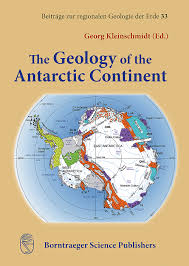

Day 4 : Reflection on Our Journey
As we come to the end of our exploration of Antarctica, it's time to reflect on what we've learned over the past three days. Antarctica is a continent of extremes, with its icy landscapes, unique wildlife, and crucial scientific research. Each aspect of our journey has highlighted the importance of this remote and largely untouched region.
Key Takeaways
- Landmarks: We started by exploring the iconic landmarks of Antarctica, including the South Pole, Mount Erebus, and the Ross Ice Shelf. These sites are not only geographical wonders but also key locations for scientific research.
- Wildlife: We then delved into the diverse and resilient wildlife that calls Antarctica home. From Emperor penguins to Weddell seals and blue whales, these animals have adapted to survive in one of the harshest environments on Earth.
- Scientific Research: Finally, we explored the cutting-edge scientific research being conducted on the continent. From studying ancient ice cores to observing the stars, the research in Antarctica is vital for understanding our planet and its future.
Flags of Antarctic Research Nations
| Country | Flag | Research Station |
|---|---|---|
| USA | McMurdo Station |
The Importance of Antarctica
Antarctica may seem distant and isolated, but its significance cannot be overstated. The continent plays a crucial role in regulating the Earth's climate, and the research conducted here has global implications. As the planet warms, understanding Antarctica's ice sheets and ecosystems becomes even more critical.
Moreover, Antarctica is a symbol of international cooperation. The Antarctic Treaty is a rare example of countries coming together to preserve a region for peaceful scientific purposes, setting an important precedent for future global collaborations.
Did you know?
üìú Did you know that the Antarctic Treaty, signed in 1959, was the first arms control agreement established during the Cold War? It ensures that Antarctica is used for peaceful purposes and scientific research only.
üåç Did you know that Antarctica influences global weather patterns? The cold air from Antarctica helps drive the circulation of the Earth‚Äôs atmosphere.
üßä Did you know that ice shelves, like the Ross Ice Shelf, act as a buffer, slowing the flow of glaciers into the ocean? This helps stabilize global sea levels.
üõ∞Ô∏è Did you know that the unique conditions in Antarctica make it an excellent place for testing space exploration technologies? The isolation and extreme environment are similar to conditions on other planets.
❄️ Did you know that Antarctica is the driest continent on Earth? Despite being covered in ice, the continent receives very little precipitation, qualifying it as a polar desert.
üî¨ Did you know that ice cores drilled from Antarctica provide a record of Earth‚Äôs climate going back hundreds of thousands of years? They are crucial for studying past climate changes.
üõ∞Ô∏è Did you know that Antarctica is a prime location for space research? Its clear, cold skies make it an ideal spot for studying the stars and other celestial objects.
Conclusion
Our journey through Antarctica has been one of discovery and reflection. As we leave this icy continent, let us remember its importance to our world and the need to protect and preserve it for future generations. Thank you for joining us on this adventure, and we hope you have gained a deeper understanding and appreciation for the wonders of Antarctica.